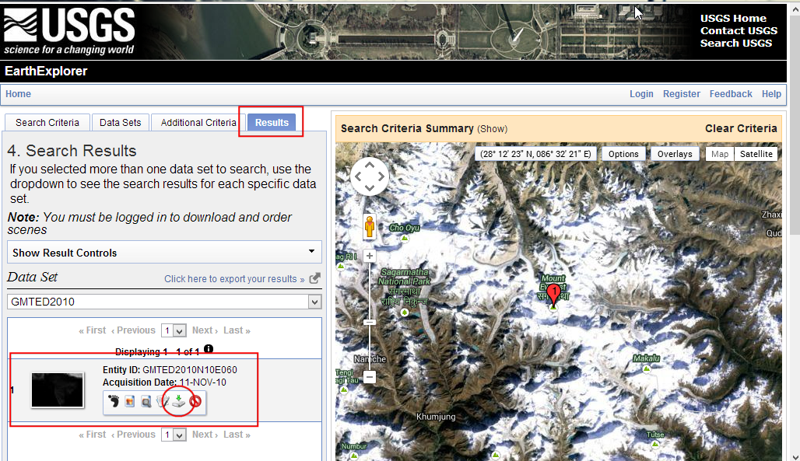
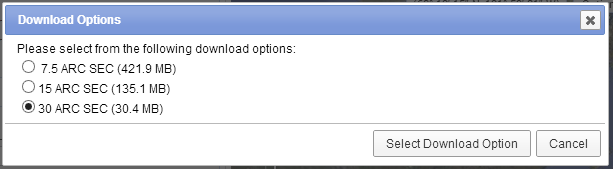
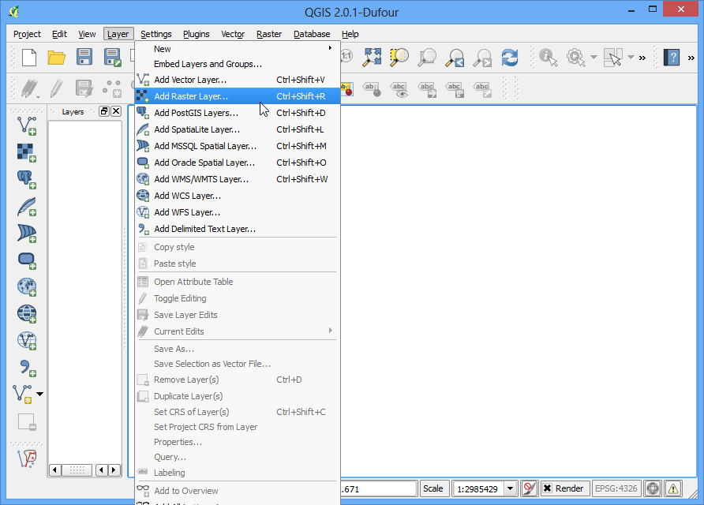
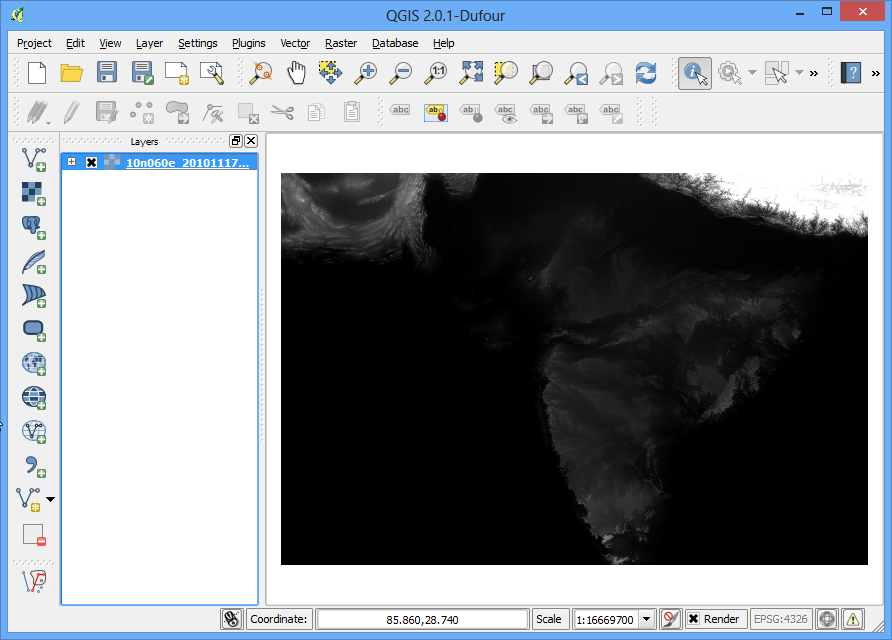
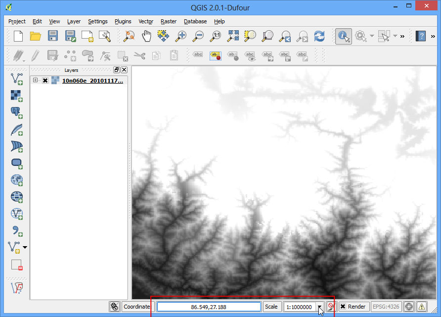
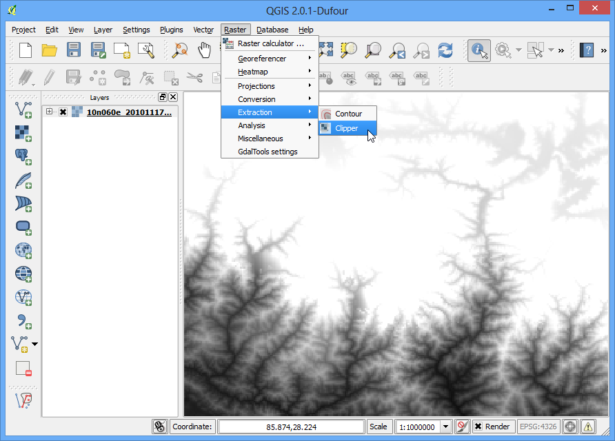
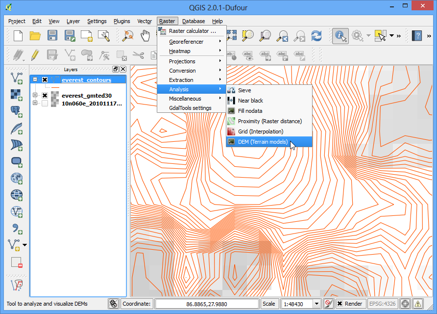
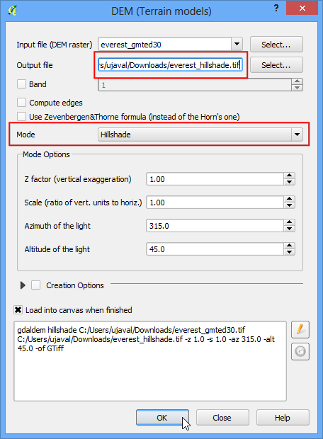
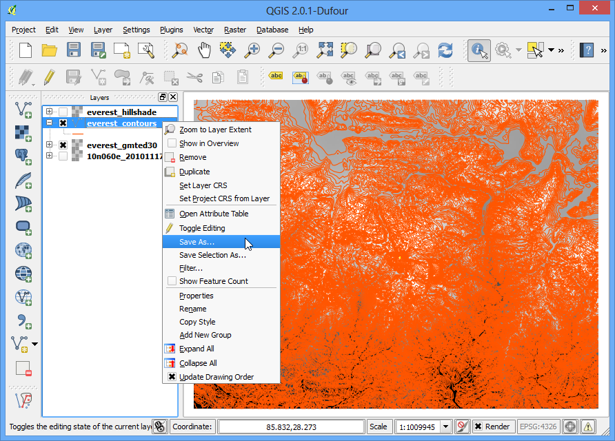
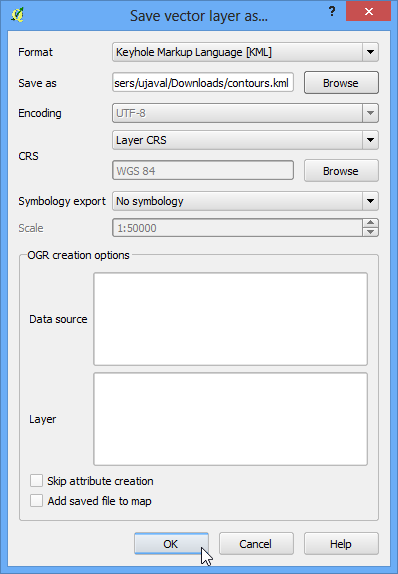

地形資料的操作
地形，或稱之為高程資料，是在 GIS 分析中很有用，並且常於各種地圖上的一種資料。QGIS 本身即具有許多處理地形資料的功能，在本教學中，我們要實際運用地形資料來不同種類的地圖，像是等高線圖或是陰影圖（hillshade map）等等。
內容說明
這次要來製作的是聖母峰周圍區域的等高線圖以及陰影圖。
取得資料
我們要用的是美國地質調查局（USGS）所釋出的 GMTED (全球多解析度地形高度資料) 資料集 2010 年版，它算是繼 GTOPO30 之後，更新版本的全球地形資料庫。GMTED 可以從美國地質調查局的 Earthexplorer 網站下載。
以下說明如何從 USGS Earthexplorer 搜尋與下載相關資料。
前往 USGS Earthexplorer，然後在 Search Criteria 的分頁中，直接輸入 Mt. Everest 然後按 Show 搜尋，接著選擇底下的結果進行定位。

在 Data Sets 分頁中，打開 Digital Elevation 子集，勾選 GMTED2010。

現在可以直接到 Results 分頁去察看與搜尋條件相符的圖資了。按下那個 Download Options 鈕，網站會要你登入，如果你沒有帳號，那就直接申請一個吧，反正是免費的。

選擇 30 ARC SEC 的選項，然後按 Select Download Option。（譯註：目前 USGS 網站已有小改版，不過流程大致相同。）

接著你應該會得到一個叫 GMTED2010N10E060_300.zip 的檔案。基本上地形資料會使用許多不同的影像格式發佈，像是 ASC、BIL、GeoTiff 格式等等。QGIS 目前透過 GDAL 函式庫，可以支援`多種格式的資料<http://www.gdal.org/formats_list.html>`_。這裡的 GMTED 資料是屬於 GeoTiff 格式，不過它目前是以被壓縮的 zip 檔儲存。
為了方便起見，你也可以直接用下面的連結下載：
GMTED2010N10E060_300.zip
資料來源 [GMTED2010]
操作流程
打開 QGIS，選擇 ，然後選擇剛才下載的 zip 檔。

zip 檔中有許多經由不同的演算法建立的不同檔案。本教學使用的是這個 10n060e_20101117_gmted_mea300.tif。

接著 QGIS 畫布上就會出現地形的資料。在地形的網格式影像中，每個像素的值代表的是這個像素的位置的高度，單位是公尺。黑色的像素代表海拔比較低，而白色像素則是位在高海拔區。

來找一下要我們看的區域吧。從維基百科中，可以知道聖母峰的經緯度座標是 27.9881° N 與 86.9253° E，記得 QGIS 的座標使用 (X, Y) 格式，所以經緯度座標要表示成 (緯度, 經度) 才行。因此，把 86.9253,27.9881 複製貼上到 QGIS 底部的 坐標 欄位後按下 Enter 鍵，就會看到上方的畫布中心移動到這個坐標了。在 比例 的地方輸入 1:1000000 後再次按下 Enter 鍵，就可以把畫布範圍縮到喜馬拉雅山脈周邊地區。

現在要來把我們的目標區域的影像給剪下來，選擇 。
註解
QGIS 中的 影像 選單其實是一個叫做 GdalTools 的附加元件。如果你找不到 影像 選單的話，請去 分頁下把 GdalTools 啟用。詳情請參閱 使用附加元件。

在 裁剪 視窗中，把輸出檔案命名為 everest_gmted30.tif，然後選擇 裁剪模式 為 範圍。

讓 裁剪 視窗保持開啟狀態，回到 QGIS 主畫面中，用滑鼠左鍵拖曳出一個可以覆蓋整張畫布的矩形。

回到 裁剪 視窗，就會發現坐標的範圍已經根據選取範圍自動填上了。把底下的 處理完成後載入QGIS地圖中 打勾，按下 確定。

操作完成後，QGIS 會出現新圖層，這個新圖層只覆蓋了聖母峰的周圍地區。馬上就來開始製作等高線圖：選擇 ，

在 等高線 視窗中，選 everest_gmted30 作為輸入檔，輸出檔`則命名為 `everest_countours.shp。在 等高線之間隔 中輸入 100，就可以製作以 100 公尺為區間的等高線圖。順便把 屬性名稱 給打開，這樣的話每條等高線的高度就會記錄在 shapefile 中的每等高線屬性內。最後按下 確定。

操作完成後，等高線就會出現在畫布上，每條線都都代表著一個特定的高度，也就是說所有在同一條等高線上的像素，應該都具有相同的高度。等高線密度越大，就代表這個地方越陡峭。我們再稍微深入看一下：在等高線的圖層上按右鍵，進入 開啟屬性表格。

可以看到每個線圖徵都有叫做 ELEV 的屬性，這就是每條等高線的海拔高度，以公尺為單位。按幾下 ELEV 的標籤，把屬性表依照這個欄位由高至低排列，就可以看到有一條等高線表示資料中最高的地方，也就是聖母峰。

選擇這條等高線，然後按下 依據選取的列縮放地圖 按鈕。

回到 QGIS 主畫面，就可以看到有一條等高線被選取、標成黃色了，這裡就是本圖資的最高海拔區域。

接下來來弄個陰影圖。選擇 ，

在 數值高程模型 (DEM) 的視窗中，輸入檔案 選 everest_gmted30，輸出檔案 命名為 everest_hillshade.tif，然後 模式 選 日照陰影，其他選項使用預設參數即可。勾選 處理完成後載入QGIS地圖中，最後按 確定。

處理完成後，QGIS 會出現另一個影像檔。因為剛才我們把範圍縮到聖母峰附近，所以現在要在 everest_hillshade 圖層上按右鍵選擇 縮放到圖層範圍。

現在就可以一覽這幅陰影圖的全貌了。

等高線圖層也可以輸出成 KML 然後到 Google Earth 下顯示，順便檢查一下我們的操作有沒有問題。右鍵按下等高線圖層，進入 存檔為...，

在 格式 欄位中選 Keyhole標記語言[KML]，然後輸出檔命名為 contours.kml，按下 確定。

如果你電腦有裝 Google Earth 的話，在資料夾中點兩下這個新檔案就可以開啟了。